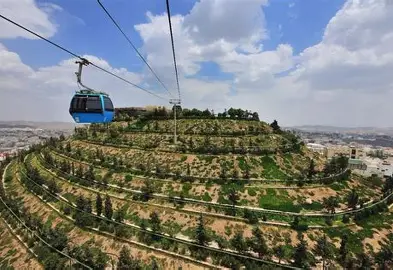
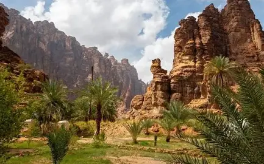

ابحث أو اختر التصنيف ثم اضغط على أي منطقة للانتقال إلى صفحة التفاصيل.
عدد النتائج: 6
عاصمة المملكة ومركزها الاقتصادي والثقافي.
وجهة دينية بارزة وتضم المسجد الحرام.
آثار قديمة ومعالم طبيعية فريدة.

طبيعة جميلة وأجواء باردة.

مواقع تاريخية وطبيعة متنوعة.
واجهة بحرية حديثة ومكان مميز للزيارة.